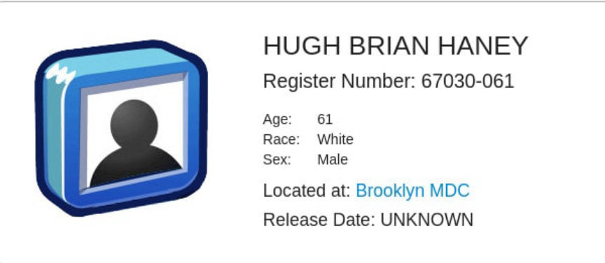
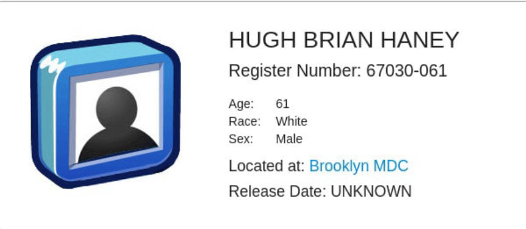

Silk Road Vendor Admits Laundering $19 Million in Bitcoin
~3 min read | Published on 2019-11-06, tagged Darkweb-Vendor, Money-Laundering, Pleaded-Guilty using 624 words.
The United States Attorney for the Southern District of New York announced that Hugh Brian Haney had admitted laundering more than $19 million worth of drug money earned by selling controlled substances through Silk Road. According to court documents, Haney operated a vendor account under the username “Pharmville.”
Geoffrey S. Berman, the U.S. Attorney for the SDNY announced that Haney had entered a guilty plea to one count of concealment money laundering and one count of engaging in a financial transaction in criminally derived property. Both charges stemmed from the case that led to Haney’s arrest earlier this year for money laundering crimes involving Bitcoin wallets linked the Pharmville vendor account.
“Hugh Haney used Silk Road as a means to sell drugs to people all over the world. Then he laundered more than $19 million in profits through cryptocurrency," U.S. Attorney Geoffrey S. Berman said. “Peddling drugs on the Dark Web does not provide anonymity forever, as Hugh Haney can attest.”
Silk Road Addresses
According to the indictment, Haney operated the Pharmville account at least during the period of 2011 and 2012. While operating the account on Silk Road, Haney transferred his Bitcoin profits to a number of of different “Bitcoin addresses outside Silk Road.” By the end of his operation, Haney had transferred thousands of Bitcoin from Silk Road to intermediary wallets and then to a addresses associated with a single account at a cryptocurrency exchange with servers in New York.
In January and February 2018, Haney traded thousands of Bitcoin for United States currency using the trading platform run by the exchange. The exchange flagged the transaction and asked Haney how he had obtained the Bitcoin and Bitcoin Cash that he traded for $19,147,057.3 (1,571.5 Bitcoins and 1,572.7 Bitcoin Cash). Haney told the exchange that he had mined the Bitcoin as well as made an early investment of $10,000 before the price of Bitcoin had skyrocketed. The exchange froze the account and contacted law enforcement about the suspicious activity.
A federal judge signed a search warrant that authorized law enforcement to seize Haney’s account at the exchange. Through the use of blockchain analysis software (and possibly other methods or tools), an Internal Revenue Service Criminal Investigation (IRS-CI) Special Agent and a Homeland Security Investigations (HSI) Special Agent identified the Silk Road as the source of Haney’s Bitcoin (they identified Bitcoin addresses linked to the marketplace). He had earned a total of 3,892.9 Bitcoin through his Silk Road vendor account.
Everything then unfolded as expected. From the previous article about Haney:
The Search Warrrant
In December 2018, a federal judge signed a warrant authorizing the search of Haney’s residence–the one on file with the exchange Haney had used to cash out his bitcoin from Silk Road. During the search, law enforcement found and imaged a laptop that contained, among other things, word documents, some of which referred to the Pharmville community from Silk Road.
From the Criminal Complaint filed by HSI Special Agent Paul Nugent:
From my discussions with Agent-1, I have learned, among other things, that among the files on Laptop-2 found by Agent-1 and the other members of the law enforcement team, was a file entitled “HBH Daily to Do List,” in which someone, apparently HUGH BRIAN HANEY, the defendant, (whose initials are “HBH”) wrote at length about his upcoming tasks; based on his training and experience, Agent-1 knows that some of the referenced tasks specifically relate to narcotics (for instance, “CP wants to trade Opana 40 mg ER for Fentanyl grams”; “Contin,” “oxys,” “ketamine,” “fent”).

Sentencing is scheduled for February 12, 2020. The money laundering charge carries a maximum sentence of 20 years in prison. The engaging in a financial transaction in criminally derived property charge carries a maximum sentence of ten years in prison.
Geoffrey S. Berman, the U.S. Attorney for the SDNY announced that Haney had entered a guilty plea to one count of concealment money laundering and one count of engaging in a financial transaction in criminally derived property. Both charges stemmed from the case that led to Haney’s arrest earlier this year for money laundering crimes involving Bitcoin wallets linked the Pharmville vendor account.
“Hugh Haney used Silk Road as a means to sell drugs to people all over the world. Then he laundered more than $19 million in profits through cryptocurrency," U.S. Attorney Geoffrey S. Berman said. “Peddling drugs on the Dark Web does not provide anonymity forever, as Hugh Haney can attest.”
Silk Road Addresses
According to the indictment, Haney operated the Pharmville account at least during the period of 2011 and 2012. While operating the account on Silk Road, Haney transferred his Bitcoin profits to a number of of different “Bitcoin addresses outside Silk Road.” By the end of his operation, Haney had transferred thousands of Bitcoin from Silk Road to intermediary wallets and then to a addresses associated with a single account at a cryptocurrency exchange with servers in New York.
In January and February 2018, Haney traded thousands of Bitcoin for United States currency using the trading platform run by the exchange. The exchange flagged the transaction and asked Haney how he had obtained the Bitcoin and Bitcoin Cash that he traded for $19,147,057.3 (1,571.5 Bitcoins and 1,572.7 Bitcoin Cash). Haney told the exchange that he had mined the Bitcoin as well as made an early investment of $10,000 before the price of Bitcoin had skyrocketed. The exchange froze the account and contacted law enforcement about the suspicious activity.
A federal judge signed a search warrant that authorized law enforcement to seize Haney’s account at the exchange. Through the use of blockchain analysis software (and possibly other methods or tools), an Internal Revenue Service Criminal Investigation (IRS-CI) Special Agent and a Homeland Security Investigations (HSI) Special Agent identified the Silk Road as the source of Haney’s Bitcoin (they identified Bitcoin addresses linked to the marketplace). He had earned a total of 3,892.9 Bitcoin through his Silk Road vendor account.
Everything then unfolded as expected. From the previous article about Haney:
The Search Warrrant
In December 2018, a federal judge signed a warrant authorizing the search of Haney’s residence–the one on file with the exchange Haney had used to cash out his bitcoin from Silk Road. During the search, law enforcement found and imaged a laptop that contained, among other things, word documents, some of which referred to the Pharmville community from Silk Road.
From the Criminal Complaint filed by HSI Special Agent Paul Nugent:
From my discussions with Agent-1, I have learned, among other things, that among the files on Laptop-2 found by Agent-1 and the other members of the law enforcement team, was a file entitled “HBH Daily to Do List,” in which someone, apparently HUGH BRIAN HANEY, the defendant, (whose initials are “HBH”) wrote at length about his upcoming tasks; based on his training and experience, Agent-1 knows that some of the referenced tasks specifically relate to narcotics (for instance, “CP wants to trade Opana 40 mg ER for Fentanyl grams”; “Contin,” “oxys,” “ketamine,” “fent”).

The BOP Listing for Hugh Haney
Sentencing is scheduled for February 12, 2020. The money laundering charge carries a maximum sentence of 20 years in prison. The engaging in a financial transaction in criminally derived property charge carries a maximum sentence of ten years in prison.